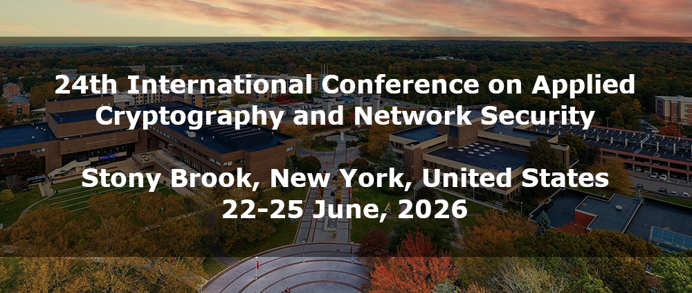
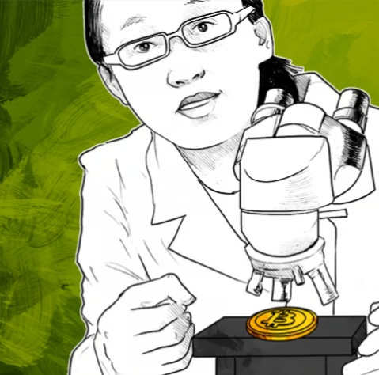

ACNS 2026 will be held June 22–25, 2026 at Stony Brook University. The program features 59 papers across 11 sessions and 2 keynote sessions, plus a poster & networking session. Standard paper presentations are 15 minutes each.
Opening · Post-Quantum Cryptography · Systems and Network Security · Cryptographic Primitives
| 09:10–09:15 | Opening Ceremony — General Chairs & PC Chairs |
| 09:15–10:45 | Session 1: Post-Quantum Cryptography |
| 10:45–11:15 | Coffee Break |
| 11:15–12:15 | Session 2: Systems and Network Security I |
| 12:15–13:45 | Lunch |
| 13:45–15:15 | Session 3: Cryptographic Primitives and Proof Systems I |
| 15:15–17:15 | Coffee Break / Poster & Networking Session |
| 2 |
The Best of Both KEMs: Securely Combining KEMs in Post-Quantum Hybrid Schemes
|
| 3 |
Towards More Efficient Registration-Based Encryption from LWE
|
| 4 |
Dynamic Puncturable Encryption
|
| 5 |
A Post Quantum Vector Commitment Scheme with Efficient Insertions and Deletions
|
| 6 |
(Partially) Blind Signatures from Cryptographic Group Actions
|
| 1 |
Efficient Post-Quantum EPID Signatures From VOLE-in-the-Head (remote)
|
| 31 |
Topology-Hiding Path Validation for Large-Scale Quantum Key Distribution Networks
|
| 32 |
Photons Are Perfect, Protocols Are Not: Cracking QKD BBM92 via the Internet
|
| 33 |
FivGeeFuzz: Authorization-Aware API Fuzzing of 5G Core Service-Based Interfaces
|
| 34 |
ICSBoM: Uncovering Hidden Supply Chain Vulnerabilities in ICS Firmware
|
| 7 |
Tight Multi-User Security of CCM and Enhancement by Tag-Based Key Derivation Applied to GCM and CCM
|
| 8 |
FlexProofs: A Vector Commitment with Flexible Linear Time for Computing All Proofs
|
| 9 |
Faster Signature Verification with 3-Dimensional Decomposition
|
| 11 |
Practical Subvector Commitments with Optimal Opening Complexity
|
| 12 |
The Cost of Fluidity: Communication Complexity Trade-offs in Fluid MPC
|
| 10 |
Efficient Sum-Check for High-Degree Polynomials (remote)
|
Keynote · Privacy · Blockchain · AI and ML Security · Social Dinner
| 09:00–10:20 | Keynote Session 1: Vitaly Shmatikov (Cornell Tech) |
| 10:20–10:50 | Coffee Break |
| 11:10–12:40 | Session 4: Privacy-Enhancing Technologies I |
| 12:40–14:00 | Lunch |
| 14:00–15:30 | Session 5: Blockchain and Decentralized Security |
| 15:30–16:00 | Coffee Break |
| 16:00–17:30 | Session 6: AI and ML Security I |
| Evening | ACNS Social Dinner (time TBA) |
| 13 |
TAPIR: A Two-Server Authenticated PIR Scheme with Preprocessing
|
| 14 |
BI-ORAM: An Oblivious Bulk-Insertion Log Table
|
| 15 |
Automatic Teller Machines for Offline Ecash
|
| 16 |
NEPAL: Climbing Beyond the Limits of Graph Matching Attacks in Privacy-Preserving Record Linkage
|
| 17 |
Towards Privacy-Preserving Federated Learning using Hybrid Homomorphic Encryption
|
| 18 |
FedFDP: Fairness-Aware Federated Learning with Differential Privacy
|
| 20 |
OptiBridge: A Trustless, Cost-Efficient Bridge Between the Lightning Network and Ethereum
|
| 21 |
$2B Lessons: Brigade as a Defense Against Real-World DeFi Bridge Exploits
|
| 23 |
Crypto-Asset Collateralised Loans in Open Finance via Robust Fully Homomorphic Encryption
|
| 24 |
X-CHAIN: Enhancing Electronic Supply Chain Security with 3D X-ray Inspection and Blockchain Integration
|
| 19 |
Stealth and Beyond: Attribute-Driven Accountability in Bitcoin Transactions (remote)
|
| 22 |
Visibility-Aware GHOST: Mitigating Visibility Asymmetry in Subtree-Based Proof-of-Work Consensus (remote)
|
| 25 |
SoK: A Taxonomy of Attacks and Defenses in Split Learning
|
| 26 |
SoK: Benchmark Datasets for Evaluating AI Safety — Gaps Between Guidelines and Practice
|
| 27 |
From Sands to Mansions: Actionable, Customizable, and Causality-Preserving Cyberattack Emulation with LLM-Powered Symbolic Planning
|
| 28 |
ChatIoT: Large Language Model-Based Security Assistant for Internet of Things with RAG
|
| 29 |
A Theoretical Framework for the Security of Multi-Stage LLM Output Filtering Pipelines
|
| 30 |
Adaptive Randomized Smoothing with Certified Robustness for Mitigating Tabular Adversarial Attacks
|
Systems · Privacy and Identity · Advanced Cryptography
| 09:00–09:15 | ACNS Awards — General Chairs & PC Chairs |
| 09:15–10:15 | Session 7: Systems and Network Security II |
| 10:15–10:45 | Coffee Break |
| 10:45–12:15 | Session 8: Privacy, Authentication, and Digital Identity |
| 12:15–14:00 | Lunch |
| 14:00–15:30 | Session 9: Advanced Cryptographic Foundations and Protocols |
| 15:30–16:00 | Coffee Break |
| 16:00–17:00 | Session 10: Implementation, Exfiltration, and Systems Security |
| 35 |
Deception by Design: A Configurable Platform for Flexible Cyber Deception Strategy Testing and Evaluation
|
| 36 |
Firmware Transparency: Strengthening Security Guarantees Against Bootloader-Targeting Attacks
|
| 54 |
Understanding the Robustness of BERT Models Against Hardware Errors: An Experimental Study
|
| 53 |
RLND: A ResNet and LSTM Based Neural Distinguisher for Lightweight Block Ciphers (remote)
|
| 38 |
Fully Encrypted Machine Learning Training Using Function-Hiding Functional Encryption
|
| 39 |
Policy-Based Access Tokens: Privacy-Preserving Verification for Digital Identity
|
| 40 |
Efficient Aggregate Anonymous Credentials for Decentralized Identity
|
| 41 |
The Cryptographic Layer of Biometric Authentication
|
| 42 |
PPMLAuth: Privacy-Preserving and Tamper-Resistant Behavioral Authentication
|
| 37 |
PrivSpike: A Privacy-Preserving Inference Framework for Deep Spiking Neural Networks using Homomorphic Encryption
|
| 43 |
Protecting Quantum Circuits Through Compiler-Resistant Obfuscation
|
| 44 |
Practice-Oriented Instances of Deterministic LPN
|
| 46 |
Sovereign Modal Signature
|
| 47 |
Practical Zero-Trust Threshold Signatures in Large-Scale Asynchronous Networks
|
| 48 |
(Re-)Formalization and Construction of Reusable and Robust Threshold Fuzzy Extractors
|
| 45 |
How to Kickstart Fsmt with Short Authentication Strings and Out-Of-Band Communication (remote)
|
| 52 |
OverHear: Headphone-Based Multi-Sensor Keystroke Inference
|
| 58 |
Adversarial DNS Exfiltration: Framework and Defense Evaluation
|
| 59 |
RESPEC-CFA: Representation-Aware Speculative Control Flow Attestation
|
| 50 |
High-Throughput Side-Channel-Protected Stream Cipher Hardware for 6G Systems (remote)
|
Keynote · Cryptanalysis · Secure Protocols · Closing
| 09:00–10:20 | Keynote Session 2: Elaine Shi (CMU) |
| 10:20–10:50 | Coffee Break |
| 10:50–12:05 | Session 11: Cryptanalysis and Secure Protocols |
| 12:05–12:15 | Closing Remarks |
| 12:15– | Lunch & Departure |

| 49 |
Improving Correlation Power Analysis on Masked CRYSTALS-Kyber with Lattice Attack
|
| 51 |
Related-Key Cryptanalysis of FUTURE
|
| 55 |
SoK: Outsourced Private Set Intersection
|
| 56 |
Updatable Private Set Intersection and Beyond: Efficient Constructions via Circuit PSI
|
| 57 |
Round-Optimal Privacy Preserving Authenticated Key Exchange Even for Incomplete Sessions (remote)
|